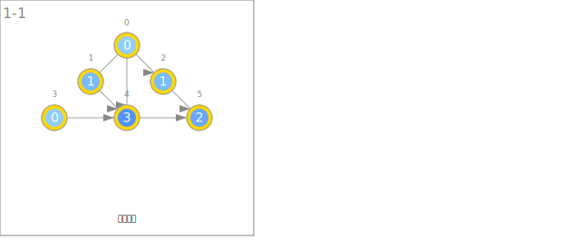
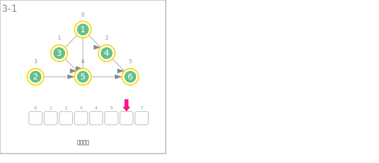

符号
| 数据 | ||
|---|---|---|
 |
节点的入度 | deg |
 |
已排序完毕的顺序 | order |
| 入度的初始化 | ||
|---|---|---|
 |
计算入度 | |
| 排序 | ||
 |
从队列取出入度为 0 的节点，确定顺序 | u ← que.dequeue() order[u] ← t++ |
 |
将相邻节点的入度减 1 | deg[v]-- |
 |
将入度为 0 的节点插入队列 | que.enqueue(v) |
 |
扩展已确定顺序的节点组的范围 | order 已确定的节点 |
| 顺序的输出 | ||
 |
输出顺序 | |
动画
入度的初始化

排序

顺序的输出
